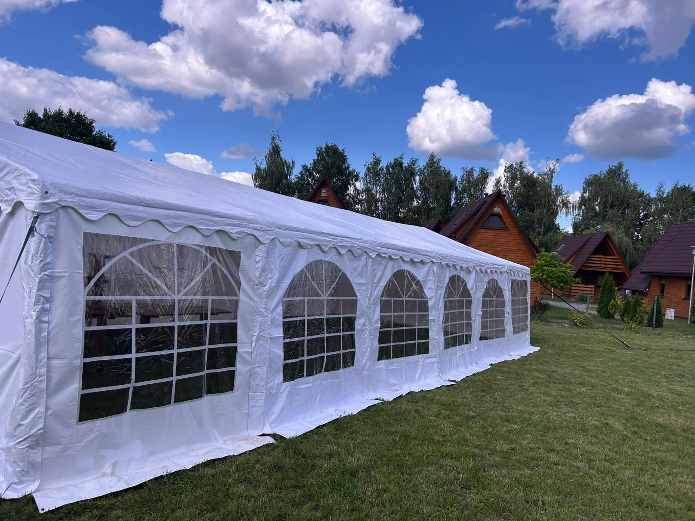

— rodzinny zjazd, 40-stka brata, integracja znajomych. Polana, ognisko, muzyka do rana. Namiot stoi w środku i robi to, co knajpa w mieście zrobić nie może — daje dach bez ścian.
Biesiada w górach to zwykle weekend na polanie lub w dolinie. Rodziny przyjeżdżają ze sprzętem kempingowym, grillami, akordeonem. Namiot to punkt bazowy — stoły, jedzenie, dach przed deszczem, parkiet do tańca.
Góry to pogoda. Rano słońce, w południe burza, wieczorem mgła. Bez dachu biesiada to ruletka. Z dachem — nawet jak leje, impreza się toczy. Po prostu.
Namiot 6×12m z montażem, stoły prostokątne, krzesła plastikowe, girlandy LED. Obciążniki na trawę/kamień. Dojedziemy na całym południu Polski — w Świętokrzyskich, Beskidy Niskie, okolice Ojcowa.
Rodzinna biesiada, 30-stka, zjazd przyjaciół. Mały namiot mieści wszystkich pod dach.
Standard dla biesiady. 50-80 osób przy stołach, reszta przy grillu i ognisku. Dach nad główną akcją.
Zjazd 3 pokoleń rodziny, duży piknik stowarzyszenia, integracja firmowa z noclegami.
40-stka brata. Rodzina zjechała z całej Polski na polanę pod Chęcinami. Sobota-niedziela. Namiot 6×12 z montażem, stoły + krzesła na 60 osób. Postawiliśmy w piątek wieczorem, zdemontowali w poniedziałek rano. "Niedziela była deszczowa, ale pod namiotem nikt się tym nie przejął — jak w altanie, tylko większej."
Tak, jeśli w promieniu 100 km od Jędrzejowa i jest podjazd dla busa/dostawczaka. Nie wjedziemy z dużym namiotem na ostrą ścieżkę — ale na większość polan/pól kempingowych dojedziemy bez problemu. Jak masz wątpliwości — wyślij pin Google Maps.
Tak, mamy obciążniki betonowe + kotwy do kamienia. Mocujemy też na trawie (obciążniki) i na kostce. Jedyne co nie pracuje — strome zbocza 20+°.
Standard to 24h. Przy dłuższych imprezach (2-3 dni) negocjujemy dopłatę — zwykle 30-50% ceny bazowej za każdy dodatkowy dzień. Zimą można dłużej — nie konkurujemy o namiot z innymi eventami.
Girlandy LED są w cenie (na naszym zasilaniu — agregatu nie mamy, ale potrzebujemy gniazdka 230V w promieniu 30m). Jeśli na polanie nie ma prądu — bierzesz swój agregat albo girlandy solarne, dostosujemy się.
— wyślij pin + datę + liczbę gości. oddzwonimy w 2h z ofertą.
